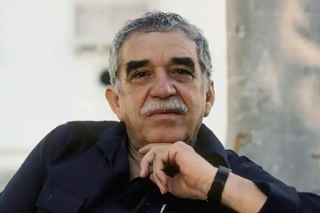
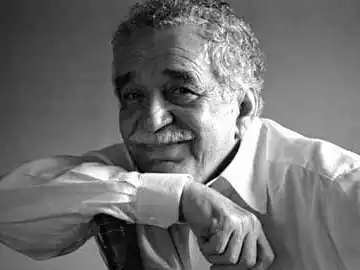
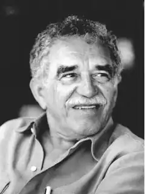
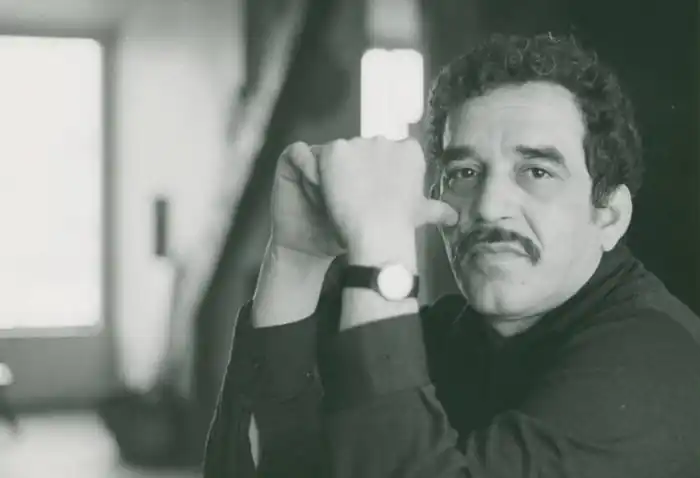

ГАБРІЕЛЬ ГАРСІА МАРКЕС
(1928 — 2014)
Гарсіа Маркес — це один з найвідоміших письменників сучасності, найяскравіший представник літератури "магічного реалізму". Він народився 6 березня 1928 року в провінційному колумбійському містечку Аракатака поблизу річки Магдалени. Батько майбутнього письменника був телеграфістом, доброю й чуйною людиною. Серед головних чинників та життєвих обставин, що визначили майбутній світогляд та коло творчих інтересів письменника, він згодом підкреслить благодійний вплив материних батьків, у родині яких він виховувався (його бабуся Транкіліна знала безліч неймовірних історій і була неперевершеною оповідачкою; дідусь Ніколас, полковник у відставці, ветеран громадянської війни 1899-1903 років — був мужньою і доброзичливою людиною), а також фантастичну атмосферу місцевості, де він жив, історія та побут якої були овіяні численними міфами та легендами. Смерть діда у 1936році змінила чудесний, часом фантастичний світ дитинства Гарсіа Маркеса: він переїздить з рідної Аракатаки до міста Сапакіри, де вчиться в інтернаті. Саме тут спогади дитинства й туга за рідною домівкою спонукають хлопчика взятися за перо — він починає писати. З 1946 року Гарсіа Маркес — студент юридичного факультету в Боготі — столиці Колумбії. Санта-Фе-де-Богота (повна назва столиці) стає місцем видання першого друкованого твору письменника: у 1947 році виходить перше оповідання, хоча автор ще не має чіткої певності щодо майбутньої літературної кар'єри. У 1948 році у зв'язку зі складною політичною сітуацією у столиці, Гарсіа Маркес змушений покинути улюблене місто та переїхати до Картахени. Тут він ще деякий час займається юриспруденцією, але згодом переключається на журналістську діяльність: 1950— 1954 роки — Гарсіа Маркес — репортер з розділу хроніки. З 1954 року він знов у Боготі вже як журналіст. Письменник давно мріяв побувати у Європі, і його мрія, нарешті, здійснюється: як кореспондент газети "Ель Еспектадор" Гарсіа Маркес працює спочатку в Римі, а пізніше переїздить до Парижа. Перші літературні спроби Гарсіа Маркеса належать періоду його навчання в інтернаті, де він пробує писати вірші й оповідання. Вдруге юнак звертається до літератури з середини 40-х років, поєднуючи свої творчі пошуки з журналістикою. Втім, надто серйозно до своїх тодішніх занять літературою Гарсіа Маркес ще не ставився, жартома зазначаючи, що свої перші оповідання написав з метою розвіяти скепсис критика і романіста Саламеа Борди щодо спроможності молодого колумбійського покоління висунути зі своїх рядів власних письменників. Перші художні публікації Гарсіа Маркеса справді не були вдалими. Це насамперед стосується його повісті "Опале листя" (1951), в якій він змалював вигадане містечко Макондо, що нагадує реальне містечко його дитинства Аракатаку. Цей твір був знаменний ще й тим, що започаткував одну з провідних тем усієї подальшої творчості письменника, а саме — тему самотності, відчуженості людини у світі. Подальша його письменницька кар'єра зазнавала як успіхів, так і тимчасових занепадів. Одне з його оповідань 1955 року "Якось після суботи" отримало національну премію Колумбії. Письменницька слава приходить до Гарсіа Маркеса в 1967 році, коли з'являється його роман "Сто років самотності", що мав неймовірний успіх і був поставлений критиками за глибиною ідейного задуму і рівнем художньої досконалості в один ряд із сервантесівським "Дон Кіхотом". У романі, навіяному біографічними образами дитинства, а також історичним контекстом життя країни, змальовані шість поколінь роду Буендіа — від його заснування і до повного виродження. Причиною цього виродження стає замкнутість, ізольованість від часу та проблем, якими живуть решта людей, а в більш глибокій смисловій перспективі роману вимирання роду Буендіа символічно знаменує деградацію, духовний занепад людства, котре все більше індивідуалізується і усамітнюється, втрачаючи ту духовну єдність, ту солідарність, яка виступає основною запорукою виживання і розвитку. Саме у зв'язку з романом Гарсіа Маркеса "Сто років самотності" чи не вперше з'являється й термін "магічний реалізм". Ще одна магістральна тема творчості Гарсіа Маркеса — це проблема влади, її філософського та психологічного обґрунтування та причин її переродження в некеровану законами і мораллю деспотичну тиранію. Ця тема проходить через багато творів письменника, з яких у першу чергу слід назвати збірку "Незвичайна і сумна історія про довірливу Ерендиру та її жорстоку бабцю" (1972), роман "Генерал у лабіринті" (1989) і особливо головний, за визначенням самого письменника, роман "Осінь патріарха" (1975). Видатний внесок письменника в розвиток латиноамериканської літератури XX століття був відзначений у 1982 році Нобелівською премією: "За романи та оповідання, в яких фантазія та реальність, поєднуючись, відображають життя і конфлікти цього континенту". Основними стильовими рисами творів Гарсіа Маркеса є взаємопроникнення елементів реальності та фантастики, поєднання філософських здобутків сучасної латиноамериканської культури з мотивами та образами індіанської, негритянської та іспанської міфології, експресивний метафоризм, тяжіння до символічних узагальнень та притчевої манери оповіді, лаконізм та "снайперська точність мовлення". "Стариган із крилами" Хто може однозначно розрізнити, де закінчується абсурд реальності, а де починається фантазія будь-якого письменника? З одного боку, життя таке різноманітне, що в ньому трапляються дивовижні збіги обставин чи просто ситуації, що не вкладаються у звичні рамки, а з іншого — хіба свідомі письменники-реалісти завжди дотримувалися лише фактів? Художнє слово тим і відрізняється від документа, що воно завжди тяжіє до певного узагальнення, реалістичні твори можуть містити в собі і символічний зміст, але це ще запитання, що саме вважає реальністю митець. Для атеїста Бог — вигадка, для віруючого — частина дійсності. Крім того, не слід плутати реалізм зображуваного факту з реалізмом ідеї: вони часто-густо не збігаються. Стовідсотково символічні твори можуть напрочуд влучно відобразити реальні тенденції та сутність явищ або навпаки: зовні реалістичні можуть виявитися відвертою брехнею. "Я реаліст,— казав про себе Габріель Гарсіа Маркес,— бо вірю, що в Латинській Америці все можливе, все реальне... і вважаю, що завдання письменника полягає в тому, щоб домогтися відповідності між літературою та дійсністю". Хоча ці слова стосуються роману "Сто років самотності", вони є справедливими для усієї творчості цього письменника, стиль якого був названий "магічною літературою". Реалізм Маркеса — у внутрішній правдивості. А от щодо фантастичного компонента... Краще розглянути це на конкретному прикладі. Кожна віруюча людина впевнена в існуванні янголів. Принаймні теоретично. Чому б янголу не завітати на землю? У Біблії ми неодноразово чули про такі випадки. То фантастична ця історія, чи ні? Це важко стверджувати однозначно. А те, що відбувається в оповіданні "Стариган із крилами" навколо цієї надзвичайної, але не такої вже фантастичної для віруючих події — цілком реальне. Як сучасна людина реагуватиме на диво? Безперечно, саме так, як це робили люди, які побачили цього старигана з крилами: хтось бачить лише видовище, таке саме, як жінка, яка перетворилася на павука, хтось не вірить своїм очам, хоча ніби й не дивується і шукає відповідних пояснень, а в цілому диво виявляється чимось зайвим у буденному житті. А тепер згадаємо деякі біблійні сюжети. Далеко не завжди янголи та святі з'являлися перед очі людям у небесному сяйві. Навпаки, перевіряючи моральний, духовний стан людей, вони набували часом більш аніж скромного вигляду. Але ставлення людей до них вирішувало подальшу долю цілих міст і навіть народів: хтось отримував нагороду, хтось — покарання. Перед знищенням Содому і Гоморри, наприклад, теж мала місце подібна перевірка. Старий і немічний янгол нічого не дарує, нікого не карає і навіть нічого не пророкує. А може, й пророкує, але ніхто не розуміє його мови — хіба не символічний момент? Навіть священик не бажає визнавати в янголі янгола (хоч і не заперечує відверто таку можливість). Він лише застерігає не поспішати з висновками тих, хто й так особливо не поспішає, бо "якщо крила не можуть слугувати головною ознакою різниці між яструбом і аеропланом, то ще менше з цього можна розпізнати янгола", або, мовляв, у його вигляді недостатньо гідності. При цьому він насправді просто не бажає брати на себе відповідальність за визнання дива дивом, а шле листи до вищої інстанції, де також починають ухилятися від остаточної відповіді, пишуть відписки з додатковими запитаннями — і це триває аж до зникнення самого янгола. А як ставляться до дива — янгола — звичайні люди? Пелайо тримає його в курнику; коли (за допомогою янгола) одужує його дитина, він готовий відпустити "старигана з крилами", але цікавість сусідів та родичів виявляється сильнішою за диво: він забуває про кращі наміри й торгує видовищем. Отже, янгол, щось небесне, духовне за визначенням, стає засобом отримання грошей, а коли вистава набридає, і користі з янгола вже нема, останній уже просто дратує випадкових господарів. Навіть вдячності вони не відчувають, хоча значно поліпшили своє матеріальне становище: "На зібрані гроші вони збудували великий двоповерховий будинок, з балконами та садом, зробили скрізь високі пороги, щоб взимку до будинку не проникали краби, а вікна забрали залізними решітками, щоб не проникали янголи". Їм не потрібне диво. Приземленість світосприйняття не дозволяє їм навіть зрозуміти незвичайність того, що відбувається. "Янгол був єдиним, хто не брав участі в подіях, яким був причиною" — пише Маркес. Якщо мотивації усіх людей, які бачили янгола, зрозумілі, то саме його бездіяльність може здатися дивною. Але у цьому ховається головний філософсько-етичний сенс оповідання, що стає зрозумілим, якщо спробувати знайти пояснення цій бездіяльності. Люди навколо янгола настільки поринули у буденність, що навіть не заслуговують на покарання (про нагороду взагалі не йдеться). Не лише посланця вищих сил, а навіть живу істоту, рівну собі, не бачать вони в янголі, але роблять це швидше через душевну обмеженість, ніж від злої волі, якої теж нема.